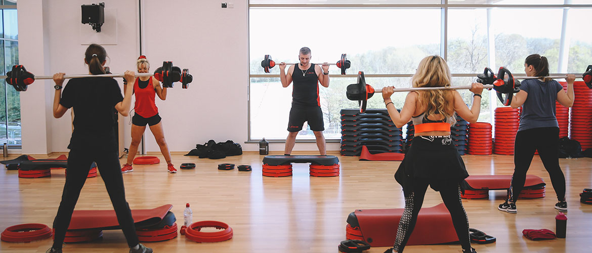
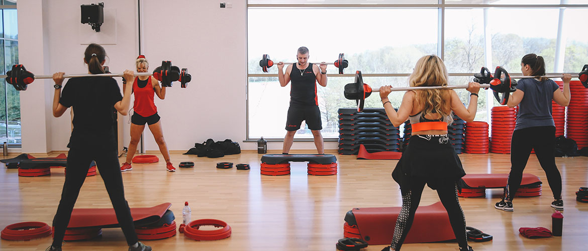

Mikä on FitPower?
Kuntosali ihmisille jotka haluavat muutosta
Tervetuloa FitPowerille
FitPower on sali niille, jotka haluavat keskittyä olennaiseen. Me ei rakenneta brändiä peiliselfieillä tai turhalla hypellä – me rakennetaan voimaa, kuntoa ja rutiinia. Meille voit tulla sellaisena kuin olet, ilman esittämistä tai vertailua. Treeniä varten, ei somea varten. Salin varustus – kaikki tarpeellinen ilman turhaa sälää Meiltä löytyy laaja valikoima laitteita sekä perusasiat kunnossa: vapaapainot, levytangot, kyykkypaikat, taljat, aerobiset laitteet ja toiminnallinen alue. Laitteet on kunnossa ja tilat siistit – juuri niin kuin pitääkin. Me ei olla mikään "wellness-keidas", mutta jos haluat oikeasti treenata, meillä on siihen hyvä pohja. Toiminnallinen treeni ja perinteinen saliharjoittelu sulassa sovussa Moni haluaa treenata vapailla painoilla, osa tykkää koneista – meillä molemmat onnistuu. Voit tehdä voimaharjoittelua, kehonpainotreeniä, räjähtäviä liikkeitä tai vaikka yhdistää kaikkea. Treenaat yksin tai kaverin kanssa – miten haluat. Salilta löytyy tilaa ja rauhaa tehdä hommat kunnolla. Ryhmäliikunta – ei show'ta, vaan aitoa tekemistä Meiltä löytyy myös ryhmäliikuntaa niille, jotka tykkää porukassa vetää hikeä pintaan. Tunneilla keskitytään itse treeniin, ei huutoon tai koreografioihin. Esimerkiksi kehonpainotunnit, circuit-treenit ja kehonhuolto on suosittuja. Tunti vetäistään rehellisesti ja ammattitaidolla, mutta ilman turhaa hifistelyä. Ohjaus ja tuki – silloin kun sitä tarvitset Jos et ole varma mistä aloittaa tai treeni ei oikein etene, meidän valmentajilta saat apua. Ohjelmat, opastus laitteisiin tai ihan vain tsekkaus tekniikoihin onnistuu. Me ei pakkomyydä valmennusta, mutta jos kaipaat tukea, se on saatavilla helposti ja järkihintaan. Jäsenyys – yksinkertaista ja reilua Ei piilokuluja, ei monimutkaisia sopimuksia. FitPower tarjoaa joustavia jäsenyyksiä ilman sitoutumista tai määräaikaisella sopimuksella. Voit liittyä helposti ja treenata silloin kun se sopii sun elämään. Opiskelijoille ja eläkeläisille löytyy omat edut, ja tutustumiskäynti onnistuu ilman painostusta. Miksi FitPower? Koska haluat treenata rauhassa. Koska arvostat toimivaa salia ilman krumeluureja. Koska etsit paikkaa, joka ei selitä liikoja vaan tarjoaa olosuhteet, joissa voi keskittyä tekemiseen.
Kuvat otettu salissa:

 
